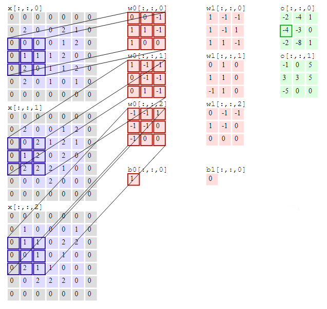

Researchers came up with the concept of CNN or Convolutional Neural Network while working on image processing algorithms. Traditional fully connected were kind of a black box - that took in all of the inputs and passed through each value to a dense network that followed into a one hot output. That seemed to work with small set of inputs.
But, when we work on a small image of 1024x768 pixels, we have an input of 3x1024x768 = 2359296 pixels. A dense multi layer neural network that consumes an input vector of 2359296 numbers would have at least 2359296 weights per neuron in the first layer itself - 2Mb of weights per neuron of the first layer. That would be crazy - for the processor as well as the RAM. Back in 1990's and early 2000's, this was almost impossible.
That led researchers wondering if there is a better way of doing this job. The first and foremost task in any image processing (recognition or manipulation) is typically detecting the edges and texture. This is followed by identifying and working on the real objects. If we agree on this, it is obvious to note that detecting the texture and edges really does not depend on the entire image. One needs to look at the pixels around a given pixel to identify an edge or a texture.
Moreover, the algorithm (whatever it is), for identifying edges or the texture should be the same across the image. We cannot have a different algorithm for the center of the image or any corner or side. The concept of detecting edge or texture has to be the same. Then why do we need to process the whole image at the same time?
This understanding led to the convolutional neural networks. The first layer of the network is made of small chunk of neurons that scan across the image - processing a few pixels at a time. Typically these are squares of 9 or 16 or 25 pixels.
Traditional Neural Networks work by crossing the input matrix with a weight matrix of similar size. That leads to heavy matrix computation. But CNN eases this task by significantly reducing the size to 3/5/7. This slides along the image, working on small blocks at a time. The processing required across the image is quite similar and thus this works very well. Thus, as in the case above, if we have an RGB image of 64x64 pixels, we could have three convolution filter of 3x3 (one per layer). That works a lot better than a fully connected dense network.
Although this was introduced for image processing, over the years, it has found application in many other domains.
The structure of the Convolution filter determines which aspect of the image it highlights. A simple filter like this would identify the vertical edges.
| 1 | 0 | -1 |
| 1 | 0 | -1 |
| 1 | 0 | -1 |
This works pretty well for purely vertical edges. Similarly we can have a horizontal edge detector. But in a decent image, we have edges in variety of angles. We can think of combining both with the hope of getting all kinds of edges. But, combining these two filters does not give a good performance. In a real scenario we use one of these
This adds transitions in each direction. That way, any change in inputs in the horizontal or vertical direction will be noticed when convolved with this filter.
| 1 | 0 | -1 |
| 2 | 0 | -2 |
| 1 | 0 | -1 |
This works on similar principles as the Sober Filter. But it adds more drastic values to get a higher order accuracy. This helps generate sharp outputs. Might also catch more noise.
| 3 | 0 | -3 |
| 10 | 0 | -10 |
| 3 | 0 | -3 |
Essentially they lay more stress on the center row. But they just detect vertical edges. We can get horizontal edges with the transpose. But how about other edges? The best answer to this problem can be found from machine learning itself! We can identify the 9 weights of the convolution matrix using machine learning itself!
Having seen a top level view of what isa CNN, let us take another step forward. Here are some of the important concepts that we should know before we go further into using CNN.
One visible problem with the Convolution Filter is that each step reduces the "information" by reducing the matrix size - shrinking output. Essentially, if the original matrix is N x N, and the filter is F x F, the resulting matrix would be (N - F + 1) x (N - F + 1). This is because the pixels on the edges are used less than the pixels in the middle of the image.
If we pad the image by (F - 1)/2 pixels on all sides, the size of N x N will be preserved.
Thus we have two types of convolutions, Valid Convolution and Same Convolution. Valid essentially means no padding. So each Convolution results in reduction in the size. Same Convolution uses padding such that the size of the matrix is preserved.
In computer vision, F is usually odd. So this works well. Odd F helps retain symmetry of the image and also allows for a center pixel that helps in various algorithms to apply a uniform bias. Thus, 3x3, 5x5, 7x7 filters are quite common. We also have 1x1 filters.
The convolution we discussed above is continuous in the sense that it sweeps the pixels continuously. We can also do it in strides - by skipping s pixels when moving the convolution filter across the image.
Thus, if we have n x n image and f x f filter and we convolve with a stride s and padding p, the output is:
((n + 2p -f)/s + 1) x ((n + 2p -f)/s + 1)Ofcourse if this is not an integer, we would have to chop it down.
Cross Correlation is essentially convolution with the matrix flipped over the bottom-top diagonal. Flipping adds the Associativity to the operation. But in image processing, we do not flip it.
Now we have an n x n x 3 image and we convolve it with f x f x 3 filter. Thus we have a height, width and number of channels in any image and its filter. At any time, the number of channels in the image is same as the number of channels in the filter. The output of this convolution has width and height of (n - f + 1) and 1 channel.
A 3 channel image convolved with a three channel filter gives us a single channel output. But we are not restricted to just one filter. We can have multiple filters - each of which results in a new layer of the output. Thus, the number of channels in the input should be the same as the number of channels in each filter. And the number of filters is the same as the number of channels in the output.
Thus, we start with 3 channel image and end up with multiple channels in the output. Each of these output channel represents some particular aspect of the image that is picked up by the corresponding filter. Hence it is also called a feature rather than a channel. In a real deep network, we also add a bias and a non linear activation function like RelU.
Pooling is essentially combining values into one value. We could have average pooling, max pooling, min pooling, etc. Thus a nxn input with pooling of fxf will generate (n/f)x(n/f) output. It has no parameters to learn.
Typically, a CNN has a series of pairs - a convolution layer followed pooling layers.